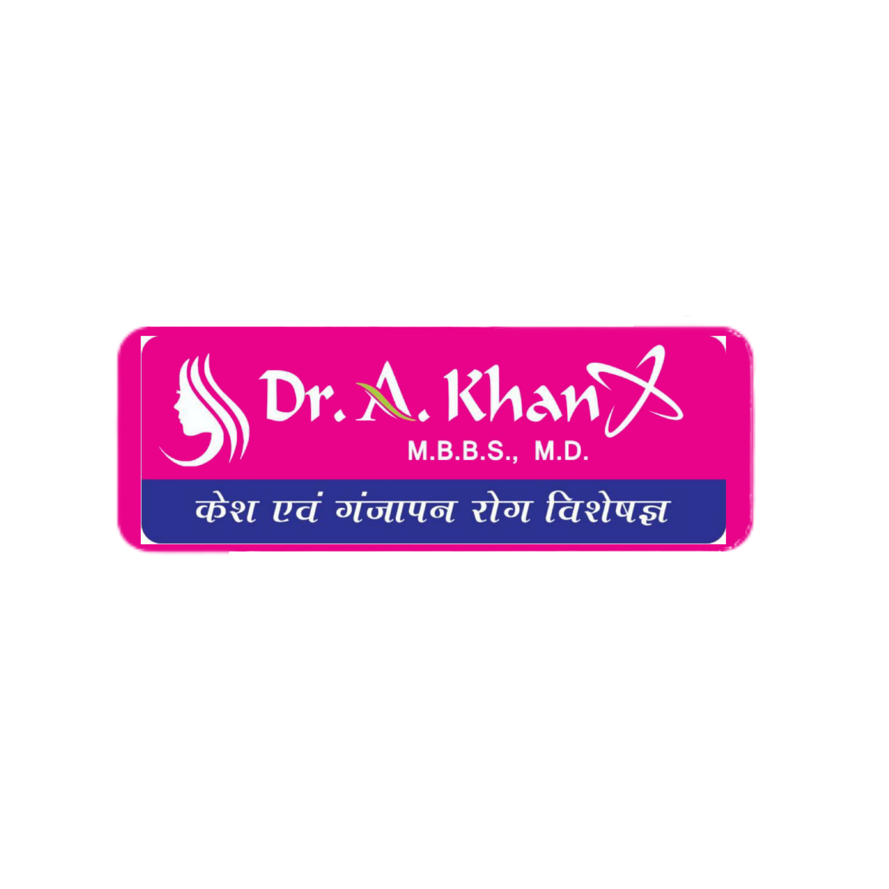

Comfort in your skin
Consultations for acne, eczema, psoriasis and other skin concerns.
Explore skin care ↗
Skin, Hair & DermatologyPRAYAGRAJ, UTTAR PRADESHDERMATOLOGY · SKIN · HAIR · MORE
From everyday skin concerns to hair and scalp care.
Personal attention, here in Prayagraj.
Skin, hair & you.Care that begins with listening.
OUR AREAS OF CARE
Start with a consultation. Your clinician will discuss your concerns and guide you through suitable options.
Consultations for acne, eczema, psoriasis and other skin concerns.
Explore skin care ↗Personal assessment for hair loss and concerns affecting your scalp.
Explore hair care ↗Review your progress and discuss your ongoing care with the clinic.
Plan a follow-up ↗A FAMILIAR FACE. PERSONAL CARE.
Dermatological care for your skin, hair and scalp in Civil Lines, Prayagraj.
Get to know your doctor →PATIENT EXPERIENCES
Selected excerpts from publicly posted patient reviews.
compassionate approach made me feel comfortable
The staff is friendly and attentive
Dr. Khan is friendly and listens well.
These are selected positive excerpts. Individual experiences vary; the source includes a wider range of feedback.
More about patient experiences →BEYOND HAIR CARE
Your skin deserves attention at every stage. Begin with an assessment of your concern and medical history.
Discuss breakouts, acne marks and changes in your skin with the clinician.
A consultation for itchy, irritated or persistently uncomfortable skin.
Assessment and follow-up for psoriasis and its effect on your skin.
Discuss uneven skin tone, dark patches and related skin concerns.
Bring up rashes, changes in your skin or symptoms you are unsure about.
Personal assessment for hair loss, dandruff and scalp concerns.
Discuss the clinic’s laser services and whether a procedure is suitable for you.
Request a consultation ↗Speak with the clinic about its obesity and weight-management consultations.
Request a consultation ↗Select a skin consultation and describe your concern to the doctor during your visit.
MEET YOUR DOCTOR
Dr. A. Khan’s clinic in Civil Lines, Prayagraj offers consultations for a range of dermatological concerns, as well as hair and scalp problems. The clinic also lists laser and obesity care.
Patients visit for acne, eczema, psoriasis, pigmentation and hair loss. Your consultation is a chance to discuss your symptoms, ask questions and understand the next steps in your care.
Consult Dr. A. Khan ↗TAKE THE FIRST STEP
Request your preferred visit time through WhatsApp. Your appointment is confirmed only when the clinic replies.
01 Enter your name and preferred visit time
02 Open WhatsApp and press Send
03 Wait for the clinic to confirm by reply
Consultation fees and clinic hours will be confirmed by the clinic. For urgent medical needs, seek immediate local care.
CONNECTED CARE
Appointments, visit summaries, invoices and messages. Your account keeps your care connected.
FIND THE CLINIC
1st floor, Shanshaah Building, Sonal Tower
Opposite Axis Bank, Civil Lines
Prayagraj, Uttar Pradesh 211001
Monday: 11 am–8 pm (IST)
Call to confirm other days and your visit time.
Address, phone and Monday hours: clinic Google Maps listing, checked 5 October 2026. Hours may change.
For general enquiries, contact the clinic by phone, email or WhatsApp. Use your signed-in portal for private care-related messages.
Appointment requests open in WhatsApp. Press Send and wait for a reply confirming your visit.
When connected, your name, phone number, appointment details and portal messages are stored in the clinic’s private backend to provide care and coordinate visits. Clinical notes are accessible to authorised staff; only explicitly shared visit summaries are visible in your portal. Contact the clinic by email to request access, correction or deletion, subject to its record-retention obligations. Payment card details are never collected on this site.
YOUR NEXT STEP
Book a consultation with Dr. A. Khan in Prayagraj.